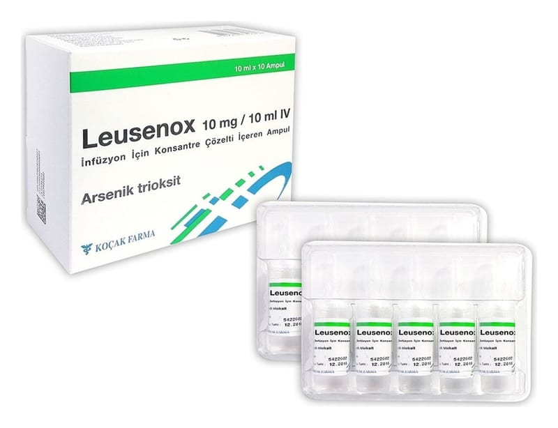

Leusenox 10 mg/10 ml IV İnfüzyon İçin Konsantre Çözelti İçeren Ampul, 1 Adet

Ne için kullanılır
KT · Bölüm 1LEUSENOX, infüzyon için konsantre çözelti içerenampuldür.Hastanede hazırlanıp sulandırılan ve damar içerisine infüzyon şeklinde verilenLEUSENOX; konsantre, steril, berrak, renksiz, sıvı çözelti olarakkırmızı OPC’li-kırmızı halkalıcam ampuller içerisinde sunulur. Her bir karton kutu,1 ve10 adet tek kullanımlıkcam ampul içerir. Herbir ampul;
10 mLolup,10 mg arsenik trioksit içerir. LEUSENOX,yetişkin hastalarda;diğer tedavilere cevap vermeyenveya nüks gelişen ve yeni tanı almış düşük-orta riskakut promiyelositik lösemi (APL) adı verilen kanser çeşidinin tedavisindeall-trans retinoik asit ile kombine ya da monoterapi olarak kullanılır.APL, anormal beyaz kan hücreleri ve anormal kanama ile morarmanın görüldüğü bir hastalık olup, miyeloid löseminin (kan hücrelerinin kanseri) özel bir türüdür. LEUSENOX, yetişkin hastalarda, Pro-Miyelositik Lösemi/Retinoik-Asit-Reseptör-alfa (PML/RAR-alfa) geni varlığı ve/veya t(15;17) (15 ve 17. kromozomlar arasında translokasyon denen bir anormallik) varlığı ile karakterize Akut Promyelositik Lösemide, remisyon indüksiyonu (iyileşme halinin sağlanması için yapılan tedavi) ve konsolidasyon (pekiştirme tedavisi) için endikedir.